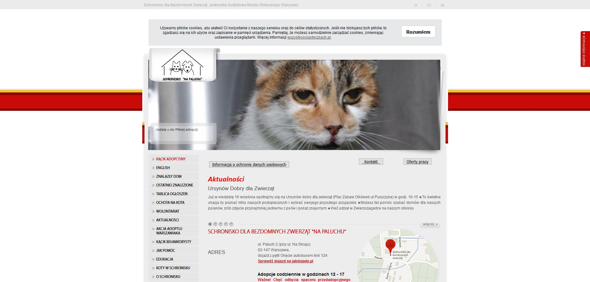

Aplikacja webowa
Łapka
Pomysł na aplikację
- Aplikacja, który ułatwi i zachęci do adopcji zwierząt ze schronisk.
- Miejsce, w którym są informacje o zwierzakach z całej Polski.
- Serwis umożliwiający zamieszczanie ogłoszeń o zwierzaku do oddania.
Przegląd istniejących rozwiązań
Pod lupę wzięłam kilka według mnie najciekawszych stron do adopcji zwierząt.
Schronisko Na Paluchu

Co bym zmieniła lub poprawiła, aby strona była bardziej użyteczna?
- Pokaz zdjęć ze zwierzętami w nagłówku strony jedynie na stronie głownej.
- Po odświeżeniu strony / zatwierdzeniu parametrów filtrowania nieprzewijanie jej na sam początek.
- Uporządkowany panel z filtrami - wyrównanie, lepsza kompozycja.
- Data w panelu filtrowania nie wpisywana, lecz wybierana z kalendarza.
- Przyciski nawigacyjne wyżej, a nie na końcu strony – nie widać ich jak zwierzak ma dużo zdjęć.
- Zakładka / Notka "ważne informacje" w stopce, zamiast wysuwanego elementu z prawej strony.
Równie szczegółowo przebadałam "Schronisko Wrocław", "Psy.pl" oraz "Przygarnij Zwierzaka".
Nie znalazłam żadnej aplikacji, która by zbierała ogłoszenia z różnych stron i je porządkowała. Dodatkowo w większości serwisów filtrowanie nie działa intuicyjnie i jest mało użyteczne.
Wywiady z użytkownikami
W tej części badań zaprosiłam kilka osób, którym dałam kilka zadań na wyżej wymienionych stronach. Zadania miały na celu zbadanie użyteczności stron konkurencyjnych, aby uniknąć takich samych błędów w projektowaniu przyszłej strony oraz sprawdzić, które z rozwiązań można wykorzystać. Dzięki tym zadaniom mogłam zweryfikować, które funkcje jest faktycznie przydatne.
Po zadaniach zebrałam wymagania użytkowników co do aplikacji do adopcji zwierząt. Na podstawie tego wywiadu sporządziłam persony użytkowników.

Historyjki użytkowników - wymagania funkcjonalne
Dzięki wywiadom oraz sporządzonym personom użytkowników udało się mi się zebrać ważne funkcjonalności strony.
Zaadoptuję zwierzaka
- Adoptując kotka chcę wiedzieć ile ma lat, aby wybrać takiego w odpowiednim dla mnie wieku.
- Adoptując kotka chcę wiedzieć, czy jest zdrowy, abym była w stanie spełnić jego potrzeby.
- Adoptując kotka chcę znać jego płeć, ponieważ nie zawsze wiadomo po imieniu.
- Adoptując kotka chcę wybrać takiego z mojego lub pobliskiego województwa, aby nie musieć daleko jechać.
- Adoptując kotka chcę znać numer konktaktowy do osoby wystawiającej ogłoszenie, aby szybko się z nią skontaktować.
- Adoptując psa chcę wiedzieć jakiej wielkości jest pies, aby wiedzieć czy nada się na strzeżenie domu/mieszkanie w bloku.
- Adoptując psa chcę móc wybrać jego rasę, ponieważ już wybrałam jakie rasy mnie interesują.
- Adoptując psa chcę móc wybierać psy tylko określonej płci, ponieważ płeć często definiuje zachowanie/ charakter.
- Adoptując zwierzę chcę zobaczyć kilka zdjęć z nim, aby wybrać najsłodsze.
- Adoptując kotka chcę przeglądać oferty dotyczące tylko kotków, aby nie przeglądać nieinteresujących mnie psów.
- Adoptując zwierzę najbardziej interesuje mnie wygląd, płeć, wiek i wielkość ponieważ są to najważniejsze dla mnie cechy.
Oddam zwierzaka
- Oddając szczeniaki chcę móc dodać kilka zdjęć, aby wiadomo było jak wyglądają.
- Dodając ogłoszenie chcę móc dodać informację o wieku zwierząt, imionach, rasie oraz krótki opis aby czytający ogłoszenie znali podstawowe informacje o nim.
- Dodając ogłoszenie, chcę zamieścić moje dane kontaktowe oraz gdzie można odebrać psy aby nie tracić czasu osób dla których jestem zbyt daleko.
- Po dodaniu ogłoszenia chcę móc zmienić zdjęcie lub inne informacje, aby dane o zwierzakach były aktualne.
Wireframes
Szkic strony pozwolił mi na szybkie zaprojektowanie wyglądu strony oraz zamieszczenie w odpowiednim miejscu najważniejszych elementów, aby spełniały wymagania użytkowników.

Następnie wykonałam prototyp w Axure.
Projekt graficzny
Interaktywny projekt graficzny wykonałam w Figmie.